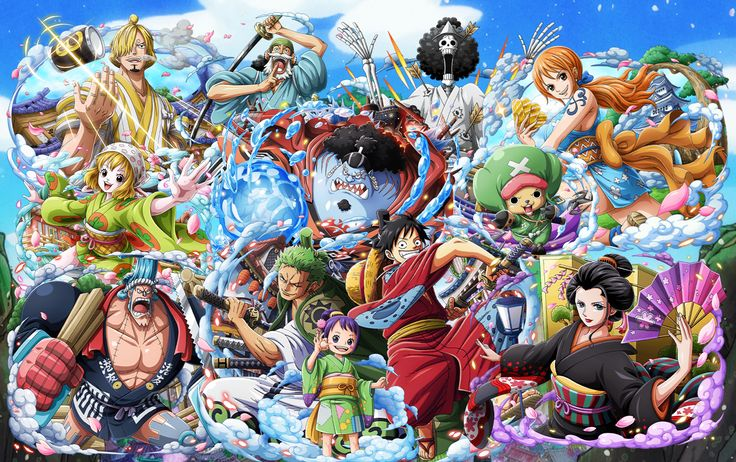
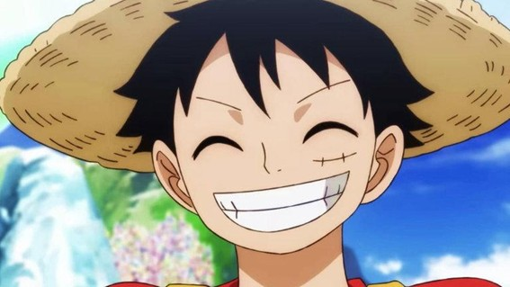
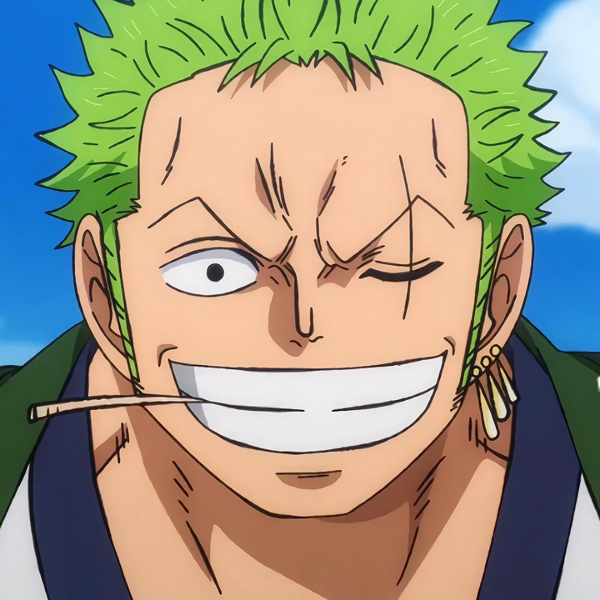
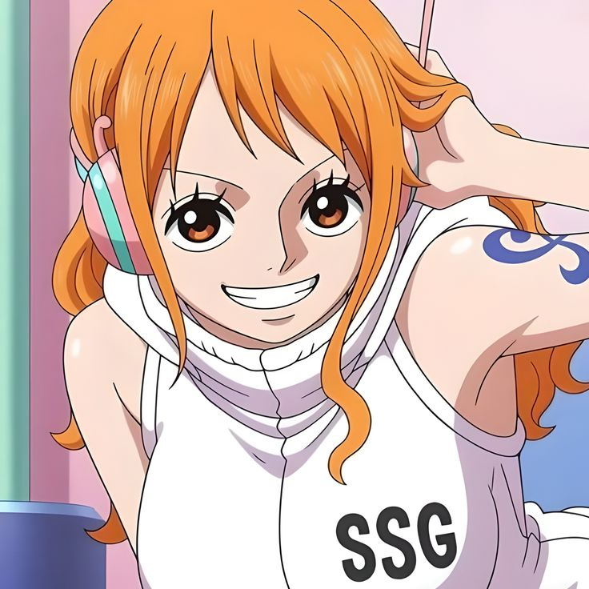
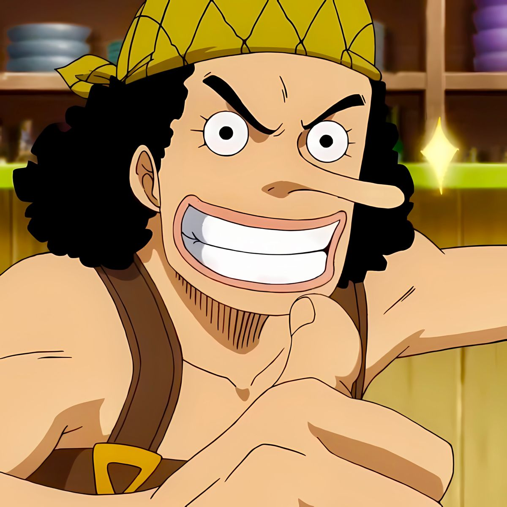
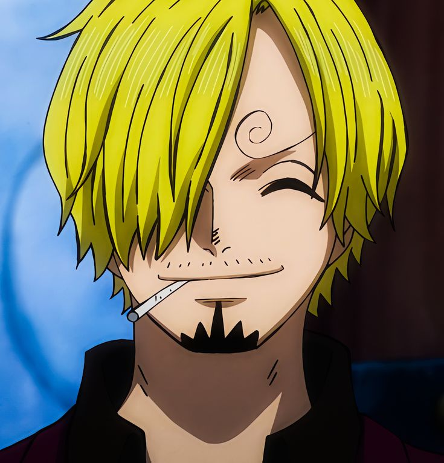
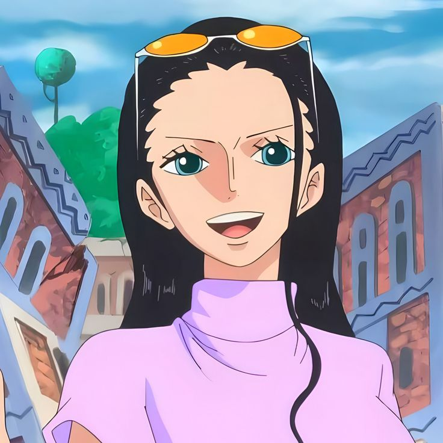
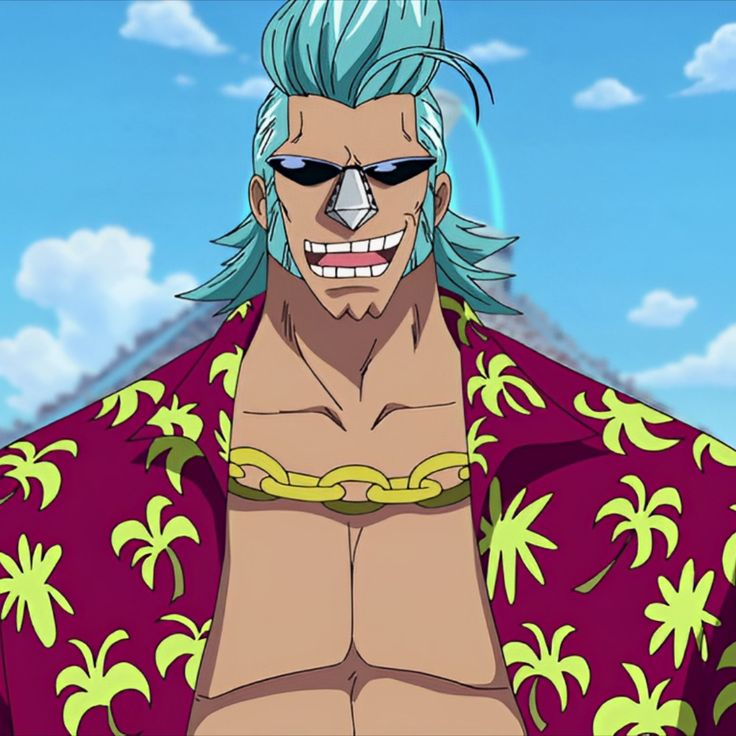
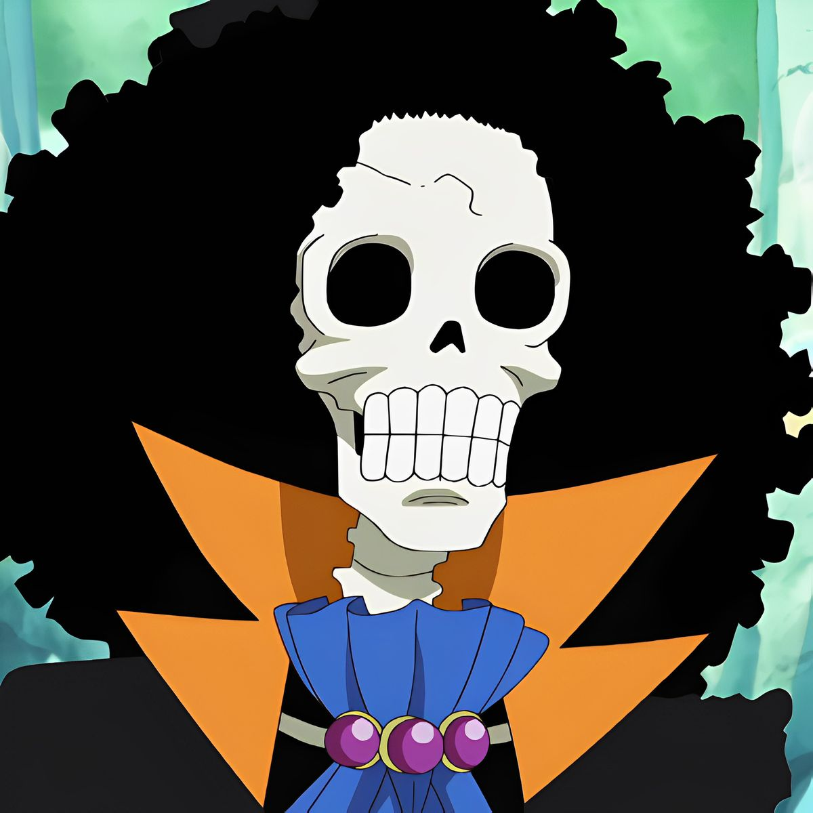
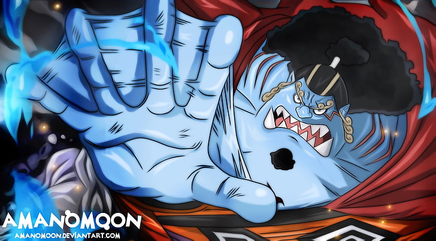

One Piece
Los Mugiwara
La tripulacion principal de One Piece esta liderada por Monkey D. Luffy y es conocida como los Piratas del Sombrero de Paja o Mugiwara. Cada miembro tiene un sueno personal, un rol muy definido dentro del barco y una razon propia para seguir el viaje hasta el final.
Volver a One PieceGuia general
La tripulacion de Luffy
Los Mugiwara funcionan como una familia encontrada. Luffy actua como capitan y motor emocional, pero la fuerza real del grupo sale de como cada miembro cubre una necesidad distinta: combate, navegacion, cocina, medicina, historia, carpinteria, musica o maniobras en alta mar.
Ese equilibrio hace que la banda no solo gane batallas, sino que tambien pueda sobrevivir al Grand Line, al Nuevo Mundo y a los conflictos politicos mas peligrosos de One Piece.
- Cada integrante tiene un sueno personal ademas de apoyar a Luffy.
- La tripulacion crece arco a arco y cambia mucho tras el timeskip.
- Su union es una de las razones por las que los Mugiwara destacan tanto en la serie.
Miembros principales

Monkey D. Luffy
CapitanRol: capitan de los Mugiwara.
Sueno: convertirse en el Rey de los Piratas.
Poder: Hito Hito no Mi modelo Nika, Haki del Rey, Armadura y Observacion, ademas del Gear 5.

Roronoa Zoro
EspadachinRol: combatiente principal y espadachin del grupo.
Sueno: ser el mejor espadachin del mundo.
Poder: Santoryu de tres espadas, Haki del Conquistador y el enorme peso de Enma.

Nami
NaveganteRol: navegante y cerebro tactico para el rumbo del barco.
Sueno: crear un mapa completo del mundo.
Poder: usa el Clima-Tact y controla el clima con ayuda de Zeus.

Usopp
FrancotiradorRol: tirador de la tripulacion y especialista en ingenio.
Sueno: convertirse en un valiente guerrero del mar.
Poder: precision extrema a distancia, municion creativa y Haki de Observacion.

Sanji
CocineroRol: cocinero del barco y uno de los grandes pilares de combate.
Sueno: encontrar el All Blue.
Poder: patadas devastadoras, Ifrit Jambe y mejoras fisicas ligadas a Germa.

Tony Tony Chopper
MedicoRol: doctor de la tripulacion.
Sueno: curar cualquier enfermedad del mundo.
Poder: transformaciones Zoan, puntos de combate variados y Monster Point como forma mas extrema.

Nico Robin
ArqueologaRol: arqueologa y pieza clave para entender la historia prohibida.
Sueno: descubrir la verdadera historia del mundo.
Poder: Hana Hana no Mi, creacion de extremidades y formas gigantescas para atacar o inmovilizar.

Franky
CarpinteroRol: carpintero, ingeniero y creador de mejoras tecnicas del grupo.
Sueno: construir el barco que llegue al fin del mundo.
Poder: cuerpo de cyborg armado, arsenal integrado y Franky Shogun para combate pesado.

Brook
MusicoRol: musico de la tripulacion y apoyo veloz en combate.
Sueno: reencontrarse con Laboon.
Poder: regreso a la vida gracias a su fruta, control del alma y tecnicas ligadas al hielo.

Jinbe
TimonelRol: timonel y veterano del mar dentro del grupo.
Sueno: lograr la igualdad entre humanos y hombres pez.
Poder: maestro del Karate Gyojin y de una fuerza monstruosa, sobre todo en el agua.
Barcos de la tripulacion
Going Merry
Primer barcoFue el primer barco de los Mugiwara y una de las piezas mas queridas del viaje inicial por todo lo que represento para la tripulacion.
Thousand Sunny
Barco actualEs la nave actual construida por Franky, mucho mas resistente, tecnologica y preparada para alcanzar el fin del mundo.
Aliados importantes
- Nefertari Vivi. Es considerada por muchos una Mugiwara honoraria por todo lo vivido junto a la tripulacion.
- Yamato. Gran aliada en Wano y uno de los apoyos mas fuertes que ha ganado Luffy en el Nuevo Mundo.
- Carrot. Paso mucho tiempo junto al grupo y formo un vinculo cercano durante varios arcos.
- Straw Hat Grand Fleet. La gran flota aliada de Luffy, compuesta por capitanes y bandas que juraron apoyarlo.